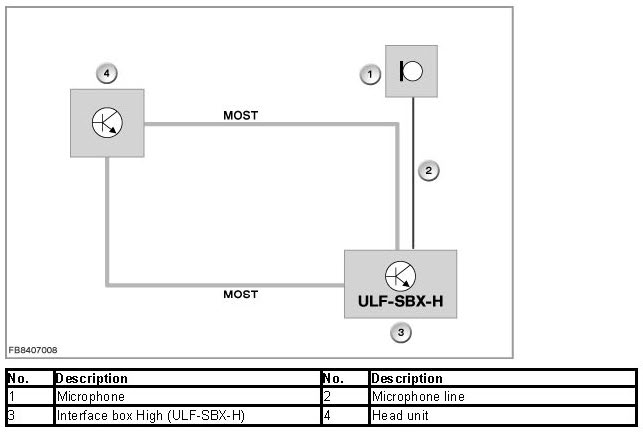
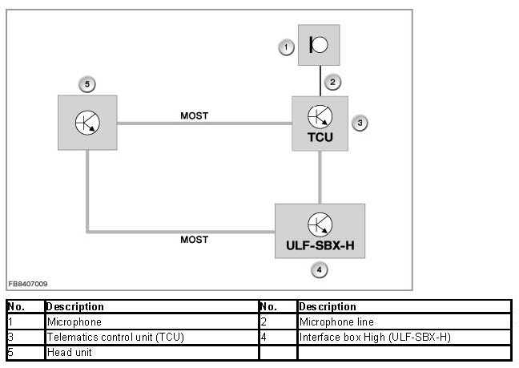
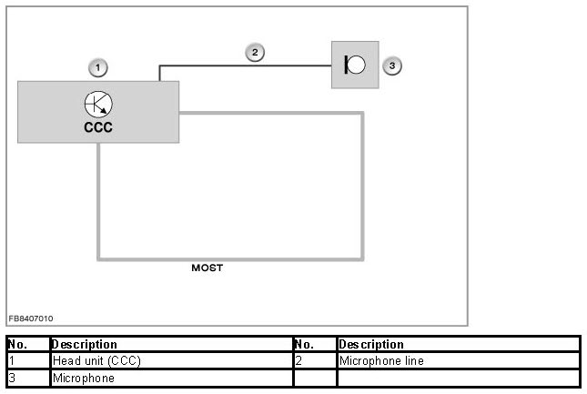

Voice Activation System: Description and Operation
Voice Recognition System In The Interface Box High ULF-SBX-H
Voice recognition system in the interface box High ULF-SBX-H
The functional description describes the voice recognition system for the following vehicles:
- E81, E82, E87, E88, E90, E91, E92, E93 (BMW 1 Series, 3 Series)
- E60, E61, E63, E64 (BMW 5 Series, 6 Series)
- E70 (BMW X5)
- R55, R56 (MINI)
This functional description only applies to vehicles that are equipped with a voice recognition system (optional extra 620), but not with CCC (optional extra 609).
Brief description of components
The voice recognition system is made available via the interface box High (ULF-SBX-H). Here, no additional hardware is installed in the vehicle. The voice recognition system is a software function implemented in the ULF-SBX-H.
System functions
The ULF-SBX-H provides all the known functions of the voice recognition system. All known voice commands for the air conditioner, entertainment system, navigation system, telephony, etc. are implemented via the ULF-SBX-H.
Notes for Service department
The following information is provided for servicing the ULF-SBX-H:
General information
Microphone and connection of the microphone
Depending on the vehicle equipment, the vehicle equipment is connected to different control units. The microphone signals are then transferred across the MOST bus to the other control units.
If only a ULF-SBX-H interface box High is installed, the vehicle microphone is connected to the ULF-SBX-H. The electrical power supply and diagnosis of the vehicle microphone are handled by the ULF-SBX-H.

If there is a parallel installation of Telematic Control Unit (TCU) and ULF-SBX-H in the vehicle, the vehicle microphone is connected to the TCU. All telephone functions are implemented via the TCU. The ULF-SBX-H provides the voice recognition system as well as other functions (depending on vehicle equipment). Diagnosis of the vehicle microphone is implemented within the framework diagnosis of the TCU.

If a Car Communication Computer (CCC) is fitted in the vehicle, voice control is not provided by the ULF-SBX-H. In this case, use the diagnosis for the CCC in the event of problems with the voice recognition system. If fitted, the ULF-SBX-H only provides the functions for the audio player or telephony depending on the equipment version.

Diagnosis instructions
Within the framework of the diagnosis of the voice recognition system, a fault profile catalogue is made available. This fault profile catalogue is structured in the same way as the familiar fault profile catalogues of the telephone systems. In this test module, currently known fault profiles can be selected and run.
No liability can be accepted for printing or other errors. Subject to changes of a technical nature